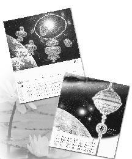

| Élévation de l'âme |
 Un nouveau millénaire n'apporte de la joie spéciale qu'une fois tous les mille ans. Comme l'humanité se prépare à inaugurer l'an 2000, nous avons conçu, juste pour vous, un cadeau élégant et chaleureux - le calendrier de bureau de style CD de l'âge d'or de l'an deux mille !
Le calendrier de bureau est disponible en deux modèles - Lampes de longévité et bijoux Célestes S.M. La qualité supérieure d'impression qui est utilisée vous apportera le rayonnement de l'univers que vous retrouverez dans les créations exquises des bijoux Célestes S.M. et dans les lampes de longévité de Maître. Le calendrier de bureau de l'an 2000 ne fait pas que démontrer que l'art est sans limite, mais il illustre aussi les qualités intérieures suprêmes de vitalité infinie et de sagesse. Bien sûr, le rayonnement des lampes de longévité et des bijoux Célestes S.M., éclairera le chemin de l'âge d'or pour que l'humanité accède à un avenir plus brillant et glorieux.